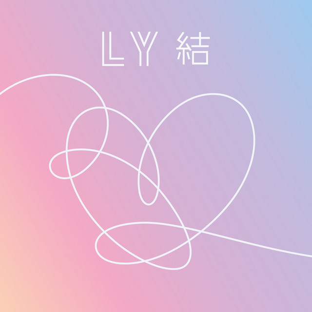
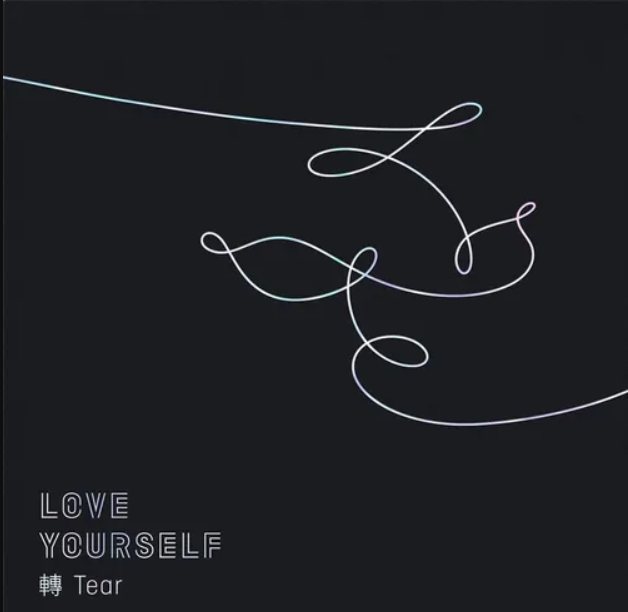
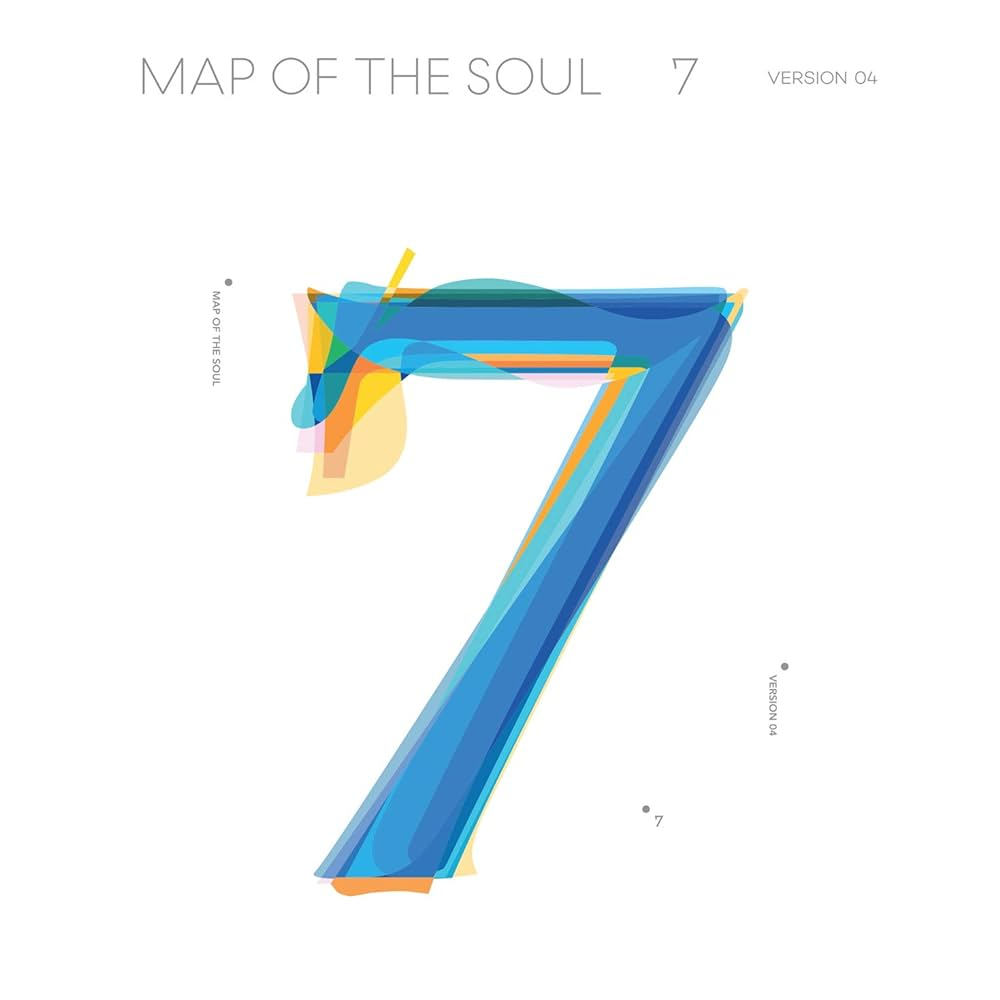
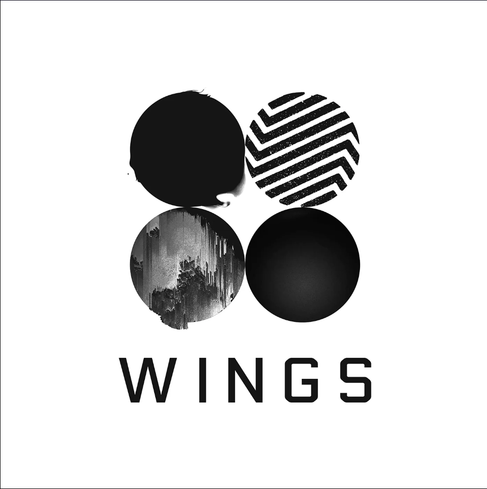
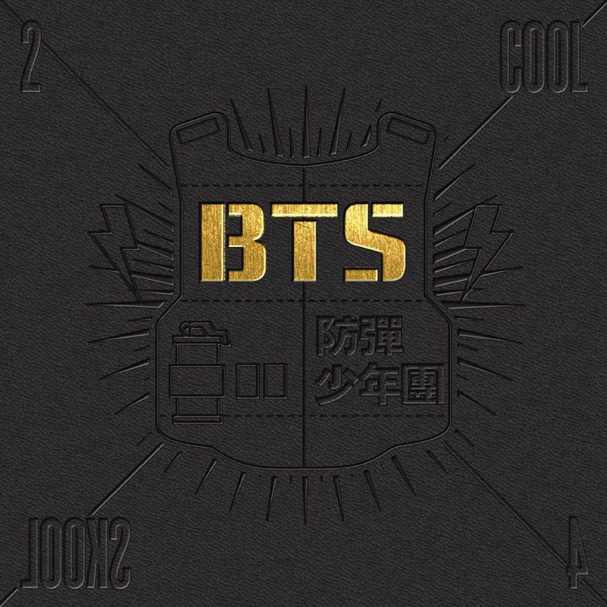
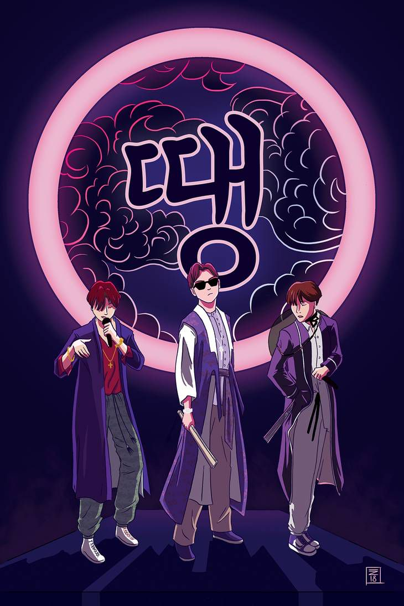

LOVE YOURSELF結‘ANSWER’
Cancion favorita: DNA

La triología de Love Your Self nos lleva por las etapas en las que una persona pasa para darse cuenta que el único amor que vale la pena es el de uno mismo.
Además exploran temas como lo dificil que es crecer en la sociedad actual, en la cual se espera mucho de esta generacion.
El verdadero amor comienza amándote a ti mismo.
LOVE YOURSELF轉 ‘TEAR’
Cancion favorita: Love Maze

La canción trata sobre el protagonista y su pareja sintiéndose perdidos y confundidos, tratando de encontrar el camino correcto en su relacion,
que se siente como un laberinto. Enfrentan dudas y críticas de los demás, pero creen que deben confiar el uno en el otro y permanecer juntos.
Reconocen que su viaje puede ser difícil, pero quieren enfrentarlo juntos y encontrar la salida del laberinto hacia un lugar mejor.
MAP OF THE SOUL : 7
Cancion favorita: Black Swan

Esta cancion hace referencia a la lucha interna de una persona que se ha acostumbrado a hacer lo que mas le apasiona y cómo el gusto que tenía por eso se ha ido por completo.
El instrumental es un sube y baja de emociones, una lucha contra la desesperación, donde lo único que te ayuda a subir es una gota de esperanza.
Wings
Cancion favorita: BTS Cypher 4

El Cypher es una canción conformada por la rap line de BTS.
El Cypher 4 es diferente a comparación de 1,2 y 3, en los que parece que se quieren probar ante otras personas.
En el 4 ya no les importa lo que los demás digan, van a seguir siendo ellos mismos, haciendo la musica que quieran, y si les gusta o no, no es su problema.
2 Cool 4 Skool
Cancion Favorita: Like

Esta canción aborda la complejidad de las emociones que surgen tras una ruptura en la era de las redes sociales.
Es una lucha interna de una persona que, a pesae de habeer terminado una relación sigue sintiendo afecto pot su ex pareja y se ve atrapada en el ciclo de revisar sus actualizaciones en redes sociales.
DDAENG 땡
Cancion Favorita: 땡

Esta canción en un single de la rap line. Ddaeng es una cancion con juego de palabras, hablan con sarcasmo acerca de sus haters y lo poco que les importa, también de como llegaron "rapido" a la fama cuando nadie lo esperaba.
Lamentable mente no está en ninguna plataforma de manera oficial, pero esta en formato de podcast en spotify.